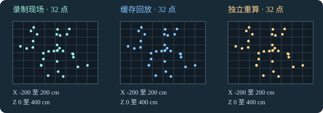

77的技术美术实战 · TA实践手记 13 · English
Niagara 缓存回放：同一帧的坐标一样，组件走了几步？
UE 5.8.4，单个 CPU 发射器，固定种子与步长。序列设为 60 fps，缓存从源模拟第 2 步开始录。缓存帧从 0 编号，因此缓存第 29 帧对应源模拟第 31 步。
先对齐三个时间编号
| 序列帧 | 缓存索引 | 源模拟步 |
|---|---|---|
| 0 | 0 | 2 |
| 29 | 29 | 31 |
| 57 | 57 | 59 |
为什么序列第 29 帧对应源模拟第 31 步？
这次实验把序列第 0 帧对齐缓存索引 0，录制从源模拟第 2 步开始，所以这三处采样的源模拟步等于缓存索引加 2。迁移到自己的工程时，先核对区段起点和实际录制起点，再确定偏移。

用三组实测坐标自查
- 下载第 1 轮 96 行坐标 CSV。按
condition分三组：录制现场 A、缓存回放 CachePlayback、独立重算 IndependentRecompute。 - 每组只取
x_cm、y_cm、z_cm，按 XYZ 排序后逐行比对，保留重复坐标。记录匹配条数。 - 两组状态表在该时点都读到约 0.516667 秒。缓存回放组件累计推进 2 次，独立重算组件累计推进 31 次。解释为什么只看坐标和年龄，无法区分这两条执行路径。
核对读数
三组各 32 条，在 CSV 精度下，无序 XYZ 多重集合完全一致。回放探针在三个录制时点按年龄请求并同步推进，第 31 步是第二次请求。独立重算从起点逐步模拟，累计推进 31 次。组件推进记录和挂载状态可用来判断路径。
需要在 UE 里自己搭一条缓存轨道？阅读 TA13 完整图文教程，按步骤录制、保存并重开，再验证区段内外和回到起点的表现。
下载离线读图与数据复算包 v1.0.0。解压后打开「开始阅读.html」查看三维对照。包内有三轮实测 CSV 和 Python 复算脚本，读图可直接用浏览器，复算需 Python 3.8 或更新版本。
做到哪一步都可以记录。用 TA13 公开反馈模板填入三种帧号、匹配坐标数、组件推进次数，或你卡住的步骤。
在 UE 里自查缓存轨道
- 按完整教程搭好缓存轨道后，确认当前关卡的 Level Sequence Actor 绑定了目标 Niagara 组件，区段指向预期的 Sim Cache，播放策略设为 Display Cache Only。
- 对本例，依次拖到 0 → 29 → 57 → 70 → 0。预期前三处有粒子，70 帧在区段外隐藏，返回 0 帧后恢复。用自己的缓存时，按实际区段改选三个区段内帧和一个区段外帧。
- 保存关卡、序列和缓存，关闭后重开同一关卡，再从关卡里的序列 Actor 打开 Sequencer，重复上述操作。区段内也空白时，先核对绑定和缓存资产，再检查取景和录制时是否有粒子。
记录 UE 版本、区段范围、四个检查时点及重开前后结果。视口自查可以验证可见性和绑定，坐标是否匹配仍需用上方 CSV 或自己的采样确认。
结论边界
这是一轮中的一个录制时点。排序匹配保留重复项，但没有用粒子身份做逐个追踪。数据也不含 GPU 耗时或任意非录制时点。CSV 只摘取三份原记录的该时点及坐标列，页面与文案使用 AI 辅助整理。
继续检查缓存末帧时，做 TA14 末帧自查，用两个内部时基对照同一个显示帧。
接下来，做 TA15 缓存切入逐帧自查。切换第 56、57 帧，检查两种区段外回放策略的输出差异。这里换成了另一个实验，不沿用本页的帧号或采样条件。